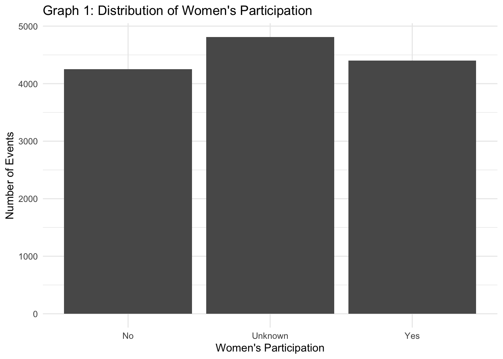
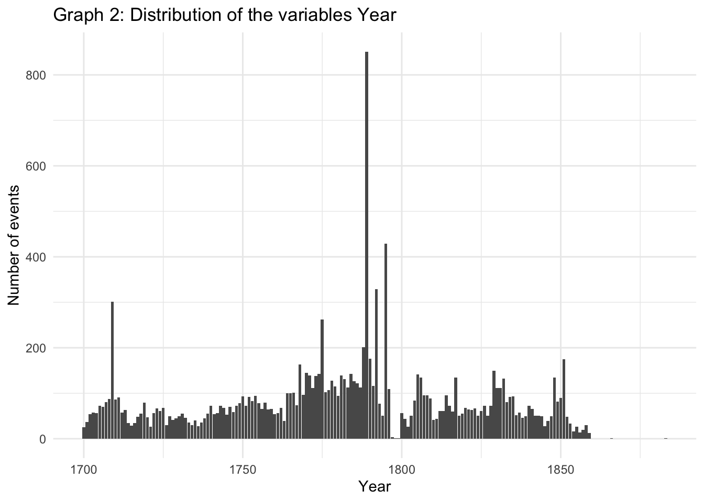
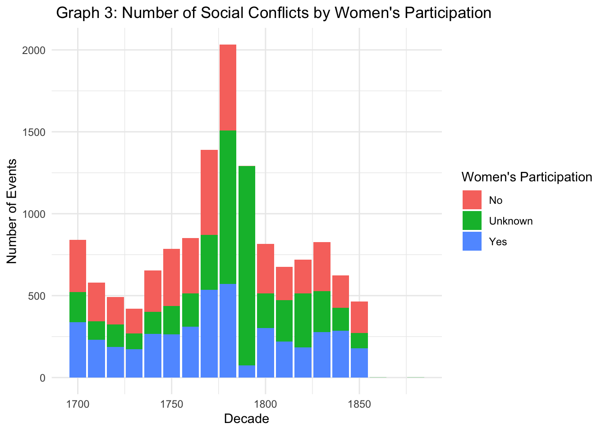
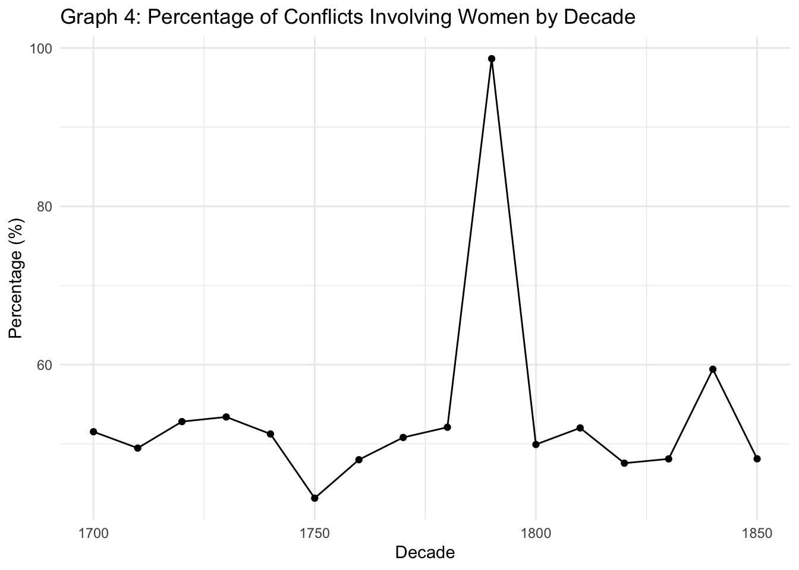

── Attaching core tidyverse packages ──────────────────────── tidyverse 2.0.0 ──
✔ dplyr 1.2.1 ✔ readr 2.2.0
✔ forcats 1.0.1 ✔ stringr 1.6.0
✔ ggplot2 4.0.2 ✔ tibble 3.3.1
✔ lubridate 1.9.4 ✔ tidyr 1.3.2
✔ purrr 1.2.1
── Conflicts ────────────────────────────────────────── tidyverse_conflicts() ──
✖ dplyr::filter() masks stats::filter()
✖ dplyr::lag() masks stats::lag()
ℹ Use the conflicted package (<http://conflicted.r-lib.org/>) to force all conflicts to become errors
library(janitor)
Attaching package: 'janitor'
The following objects are masked from 'package:stats':
chisq.test, fisher.test
Background
In milestone one, I identified the research question: How did the percentage of social conflicts involving women in France change between the 18th and 19th centuries? And I simulated data with three variables: Event ID, Year, and Women’s Participation, to potentially answer the question.
# Set seed for reproducibilityset.seed(123)# Simulate 500 rows of datasocial_conflict <-tibble("Event_ID"=1:500,"Year"=sample(1700:1900, size =500, replace =TRUE),"Women_Participation"=sample(c(0, 1),size =500,replace =TRUE,prob =c(0.7, 0.3) ))# View the first 6 rowshead(social_conflict)
Filters the original dataset to include only social conflict events recorded in France between 1700 and 1900
france_data <- data_copy |>filter( country_name =="France", #filtering country to be France year >=1700, year <=1900#filtering year to be between 1700 to 1900 ) |>select(id, year, women_participation) #selecting the three columns needed for the questionhead(france_data)
# A tibble: 6 × 3
id year women_participation
<chr> <int> <chr>
1 1 1789 Unknown
2 2 1789 Unknown
3 3 1789 No
4 4 1789 No
5 5 1789 Unknown
6 6 1789 Unknown
# check what are the values under the women_participation column.unique(france_data$women_participation)
[1] "Unknown" "No" "Yes"
3. Checking the cleaned data
# Check that all observations are between 1700 to 1900stopifnot(all(france_data$year >=1700& france_data$year <=1900,na.rm =TRUE))
# Check that the cleaned data retained exactly the three columns you wantedstopifnot(all(names(france_data) %in%c("id", "year", "women_participation")),ncol(france_data) ==3)
#Check only France data is selectedstopifnot(all( data_copy |>filter(year >=1700, year <=1900) |>filter(country_name =="France") |>pull(country_name) =="France" ))
# Check the event id is uniquestopifnot(!anyDuplicated(france_data$id))
4.Exploratory data analysis
Graph 1: Distribution of women’s participation
france_data |>ggplot(aes(x = women_participation)) +geom_bar() +labs(title ="Graph 1: Distribution of Women's Participation",x ="Women's Participation",y ="Number of Events" ) +theme_minimal()

This shows that women’s participation is unknown for more than a third of the social conflict data.
Graph 2: Number of social conflicts by years
library(ggplot2)ggplot(france_data, aes(x = year)) +geom_bar() +labs(title ="Graph 2: Distribution of the variables Year",x ="Year",y ="Number of events" ) +theme_minimal()

Graph 2 shows that there is no to a few social conflict documented between 1790 and 1800, as well as after 1860.
Graph 3: Number of Social Conflicts by Women’s Participation
france_data <- france_data |>mutate(decade =floor(year /10) *10)france_data |>ggplot(aes(x = decade, fill = women_participation)) +geom_bar(position ="stack") +labs(title =" Graph 3: Number of Social Conflicts by Women's Participation",x ="Decade",y ="Number of Events",fill ="Women's Participation" ) +theme_minimal()

The graph shows a substantial concentration of recorded social conflicts between 1780 and 1800. However, women’s participation in most of these events is classified as “Unknown,” indicating a lack of documented information about women’s involvement during this period.
Graph 4: Percentage of Conflicts Involving Women by Decade (filtering out unknow data for women’s participation)
france_data <- france_data |>mutate(decade =floor(year /10) *10)france_data |>filter(women_participation %in%c("Yes", "No")) |>group_by(decade) |>summarise(percentage_women =mean(women_participation =="Yes") *100,.groups ="drop" ) |>ggplot(aes(x = decade, y = percentage_women)) +geom_line() +geom_point() +labs(title ="Graph 4: Percentage of Conflicts Involving Women by Decade",x ="Decade",y ="Percentage (%)" ) +theme_minimal()

The graph suggests that the proportion of recorded conflicts involving women peaked around 1790. However, this pattern should be interpreted with caution, as a large number of events during this period have undocumented women’s participation. As shown in Graph 3, the actual number of events with documented women’s participation was relatively low between 1790 and 1800.
5. Note
What surprised me most was the lack of historical documentation regarding women’s participation in social conflicts, which significantly limits the ability to examine trends in women’s involvement over time. This also raised another question for me: why has women’s participation been so poorly documented? One possible explanation is the historical marginalization of women in political and public life, where men were more commonly recognized as legitimate political actors and citizens. For example, French women were not granted the right to vote until 1944, much later than men. This historical gender inequality may also have influenced whose participation was considered worth recording in historical accounts. Consequently, the historical records of social conflicts may disproportionately represent men’s experiences, making women’s involvement less visible in the dataset.